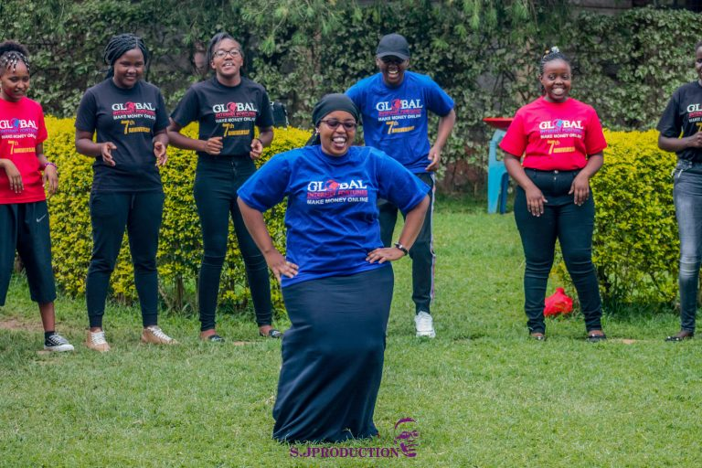

With Global Internet Fortunes,
I discovered an internet business opportunity. An opportunity that introduced me to a field I had no idea existed. An opportunity that has allowed me to achieve more in life and make a difference in other people’s lives. I’m the type of person who rarely misses out on opportunities. I fell in love with the field of online marketing and decided to leave my stressful career to pursue my dream of being my own boss.
I began my business by learning as I went along. On a weekly basis, I was making a few thousand dollars. The business had its ups and downs, but my earnings steadily increased thanks to the company’s mentorship and the support of my business partners.
 I believe that we are all capable of greatness and that no ambition is too huge for us to achieve. With the correct mentality, I believe that if you can dream it, you can attain it. But keep in mind that you can’t climb the success ladder with a crowd cheering you on or your hands in your pockets.
GIF has helped me grow both financially and personally. In the last few years, I’ve accomplished a lot in my industry, including becoming an investor, buying property, traveling, and making a difference in other people’s lives.
I am grateful to my mentor, Mr. Kimathi Kamundeh, CEO/Founder of GIF, for inventing this Fantastic Youth Empowerment Program.
Thank you so much to my family and every one of my well-wishers for your unwavering moral support.
This dream would not have come true if it hadn’t been for all of you.
I’d like to teach a few folks how to use technology to achieve financial independence for free.
I believe that we are all capable of greatness and that no ambition is too huge for us to achieve. With the correct mentality, I believe that if you can dream it, you can attain it. But keep in mind that you can’t climb the success ladder with a crowd cheering you on or your hands in your pockets.
GIF has helped me grow both financially and personally. In the last few years, I’ve accomplished a lot in my industry, including becoming an investor, buying property, traveling, and making a difference in other people’s lives.
I am grateful to my mentor, Mr. Kimathi Kamundeh, CEO/Founder of GIF, for inventing this Fantastic Youth Empowerment Program.
Thank you so much to my family and every one of my well-wishers for your unwavering moral support.
This dream would not have come true if it hadn’t been for all of you.
I’d like to teach a few folks how to use technology to achieve financial independence for free.
WHEN WE COME TOGETHER GREAT THINGS HAPPEN
2021 During our 9th Anniversary I am proud to have build a team of more than one hundred individuals who made a decision to Build and grow under my Coaching and Mentorship
QUALIFICATIONS
1. BE COACHABLE
2. BE SELFDRIVEN
3. BE IMPLEMENTIVE
All you need is to equip yourself to our training
TRANSFORMING LIVES SINCE 2012
Above Are some of the Leaders I have grown in the Team Miss Aasia FROM MOMBASA office and Miss Sheuda From EMBU.
We were glad to have a chance to be selected in the company to celebrate the 10th anniversary of the company in the year 2023
Moreen Opati
WhatsApp +254 746 783389
Your Partner in Success